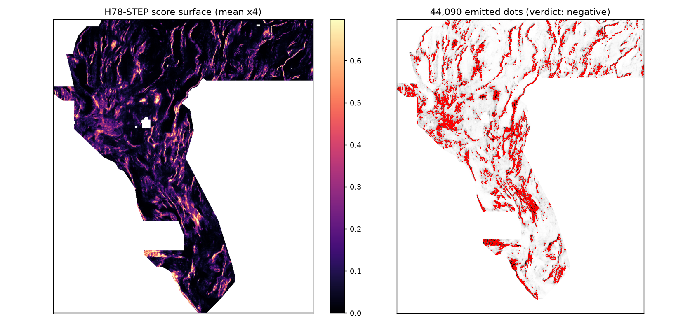

← Home (release audit) · H78-CS lane · H78-A lane · H78-MPC lane
Hypothesis (preregistered, registry/preregistration_h78step.json): A normal fault is a step, not only a ridge: basement depth, isostatic gravity and detrended elevation change level across the fault and stay changed. Strike-elongated flank-patch contrasts at +-4 px and +-9 px across the visible-catalogue strike on six bands (signed step, |step|, noise-normalised step, centre-line deviation, cross-scale sharpness) measure that throw where pointwise derivatives at sigma<=3 px see only a weak diffuse gradient, in particular for covered intrabasin strands absent from the surface catalogue. An HGB learner on raw19 + 54 STEP features (replacing all pointwise iso/steered derivatives) therefore ranks withheld fault pixels higher per emitted dot than the H78-A pointwise learner.
Mechanism: Strike-elongated flank patches at +-4/+-9 px across the visible-catalogue strike on det_elev/rtp/iso_grav_anom/depth_to_base_surf/cond_surf/band6: signed step, |step|, noise-normalised step, centre-line deviation, cross-scale sharpness (54 features) + raw 19 bands, HGB; greedy dots >=2.8 px apart, <=3 px catalogue flank removed, 44,090 dots.
Named non-fault mimic: Lithologic/intrusive contacts and basin-margin facies changes are also cross-strike level changes without a fault.
Why the family's best file scores 0.2778 [owner-report] and five ranked candidate hypotheses:
research/h78step_hypotheses.md in the repo. In one line: the 0.19→0.28 climb was sparse-dot emission
plus catalogue-flank pruning on one unchanged detector; beating it needs a better pixel ranking, which is what
this lane tried — with a different operator, because appending features to H78-A was already shown to duplicate
that lane (H78-CS ρ 0.952, H78-SPY forward overlap 0.9245).
| Arm (B3 / 44,090 dots) | HOLDOUT-DTI | 95% CI |
|---|---|---|
| CAND_STEP (raw19 + 54 STEP) | 0.1662 | [0.1483, 0.1852] |
| CTRL_A2 (103 H78-A, rerun control) | 0.1826 | [0.1636, 0.1999] |
| A1_ISO (raw19 + isotropic 36) | 0.1700 | [0.1498, 0.1883] |
| ABL_STEPONLY (54 STEP only) | 0.1294 | [0.1143, 0.1443] |
| paired Δ CAND − CTRL | -0.0164 [-0.0235, -0.0090] | |
| paired Δ CAND − A1_ISO | -0.0038 [-0.0132, +0.0059] | |
Reading: the paired Δ vs CTRL is significantly negative — the flank-step operator, used as a
replacement for pointwise steered derivatives, loses. Vs A1_ISO it is a tie: flank contrast carries about as much
usable signal as rotation-invariant derivatives, but less than strike-steered ones. STEP's single strongest feature
(step_det_elev_d4_abs, canary AUC 0.6027) beats every
pointwise feature alone, yet the ensemble is worse — consistent with detection without localisation: flank patches
±4–9 px wide can tell a step exists near a line but cannot place the line inside the 3-px (300 m) credit kernel as
precisely as curvature centred on it.
Far-truth stratum (withheld truth > 10 px from any visible fault, 5,150 positives): CAND 0.0620 vs CTRL 0.0778 vs STEPONLY 0.0726. Secondary flank test B5 hurt both arms (CAND 0.1600, CTRL 0.1779), so the 3→5 px flank extension is falsified on this instrument and production kept B3.
Experiment 2 (amendment IR-78STEP-A1, diagnostic only, could not promote): appending STEP to the full H78-A stack (157 features) gives HOLDOUT-DTI 0.1790 [0.1618, 0.1941], paired Δ vs CTRL -0.0036 [-0.0104, +0.0031], surface ρ 0.9292 — appending adds nothing and duplicates the H78-A lane. STEP signal is largely redundant with steered derivatives once localisation matters.
| Gate item | Result |
|---|---|
| CAND_STEP pooled HOLDOUT-DTI > CTRL_A2 (same folds/emitter, B3/44090) | FAIL |
| CAND_STEP > 0.1826 (repo best at primary config; repo best incl. @50k dots = 0.1843) | FAIL |
| paired Δ (CAND − CTRL) 95% CI lower bound > 0 | FAIL |
| leakage canary clean (no single-feature symmetric AUC > 0.90) | PASS |
| holdout score-surface Spearman ρ CAND vs CTRL ≤ 0.90 (lane distinctness) | PASS |
| uniqueness pass vs 9 comparators (surface ρ ≤ 0.90 before placement AND forward 3-px dot overlap ≤ 0.70 on final dots) | FAIL |
| format validator pass (shared writer + independent re-read + verify_tif.py) | PASS |
| seed-30 replication | not run (preregistration: only if seed-20 gates pass) |
Production dots: median distance to catalogue 5.8 px, 46% within 5 px (H33 shipped: median 19.6 px) — this field also crowds the catalogue; recorded as a live-transfer risk, now moot given the negative verdict.
All 157 features tested; maximum overall 0.6027 — clean. Top STEP features:
| Feature | AUC | ≤ 0.90 |
|---|---|---|
step_det_elev_d4_abs | 0.6027 | PASS |
step_det_elev_d9_abs | 0.5985 | PASS |
step_det_elev_d4_t | 0.5884 | PASS |
step_det_elev_d9_t | 0.5798 | PASS |
step_det_elev_d4_cdev | 0.5670 | PASS |
step_det_elev_d9_cdev | 0.5580 | PASS |
step_det_elev_d4_signed | 0.5434 | PASS |
step_det_elev_d9_signed | 0.5400 | PASS |
step_rtp_d9_abs | 0.5370 | PASS |
step_det_elev_sharp | 0.5356 | PASS |
Forward overlap = fraction of my dots within 3 px of theirs (the binding direction; reverse shown for diagnosis).
Scope: 9 comparators: 3 restored registry rasters + GEMS70-P5 fetched this session + all 5 previously shipped rasters of this repo. Not the organizer's complete registry. complete_registry_verified = false.
| Comparator | Surface ρ (pre-placement) | Forward overlap | Reverse overlap | Dot ρ |
|---|---|---|---|---|
| H19-5 solid (121131 px; owner-report 0.1922) | 0.1137 | 0.4133 | 0.3626 | 0.0269 |
| D2.8 dots (44090; owner-report 0.2600) | 0.0639 | 0.3702 | 0.3349 | 0.0158 |
| H33-2-B2 dots (37654; owner-report 0.2778) | 0.0461 | 0.3309 | 0.3144 | 0.0184 |
| GEMS70-P5-54000 (owner-report 0.2478 family; blocked H78-MPC) | 0.0400 | 0.4370 | 0.2608 | 0.0105 |
| H78-A primary shipped (44090) | 0.1199 | 0.7929 | 0.7743 | 0.1335 |
| H78-A altB2 shipped (44090) | 0.1285 | 0.7429 | 0.7962 | 0.0484 |
| H78-MPC shipped (37654) | 0.0634 | 0.3314 | 0.3633 | 0.0203 |
| H78-CS shipped (44090) | 0.1209 | 0.7936 | 0.7819 | 0.1334 |
| H78-SPY shipped (44090) | 0.1206 | 0.7821 | 0.7903 | 0.1335 |
Max surface |ρ| 0.1285 (limit 0.90) — pass. Max forward dot overlap 0.7936 vs H78-CS shipped (44090) (limit 0.70) — FAIL: even with a different operator, ~79% of dots land within 300 m of the H78-A-lineage dots, because both fields find the same lineaments. Under the literal parallel-run rule this is a duplicate of the H78-A dot set as well as a holdout negative. Against the older registry (H19-5 / D2.8 / H33 / GEMS70-P5) forward overlaps are 0.33–0.44.
| verify_tif.py check | Result |
|---|---|
single_band | PASS |
float32 | PASS |
crs_EPSG:32611 | PASS |
shape_3730x3292 | PASS |
transform_(100,0,243350,0,-100,4508550) | PASS |
no_nodata_tag | PASS |
all_finite | PASS |
no_nan_inside_footprint | PASS |
values_in_[0,1] | PASS |
binary_values_only | PASS |
zero_outside_footprint | PASS |
zero_on_catalogue | PASS |
SHA-256 5ce829b026be18a07c0c36d7ec103895da8b3b0443966f01f0d5c8a5bbea9c4b · 153,051 bytes · ZIP contains the single
byte-identical TIFF (writer is fail-closed: it never clips or repairs model output, so the portal's
"Predicted values must be in range [0, 1]" error is impossible by construction and by re-read).

tc_totalcount in code, but the GeoTIFF's own description says
"tilt angle or total curvature — magnetic field derivative". Interpretations of band 6 as radiometrics in earlier
repo documents are unsupported by the file. Flagged for the template owner.Sources for manual review: competition problem description · leaderboard · official reference solution · rules PDF (NLR 96647) · USGS GeoDAWN · GDR 1391 (INGENIOUS) · EPSG:32611 · Tversky index. Non-GitHub hosts were not reachable from this sandbox; links are for manual verification.